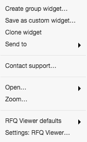
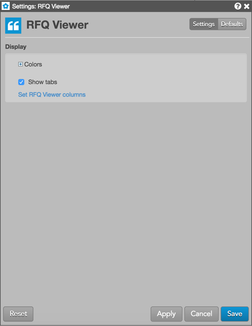

Right-click in the title bar of the RFQ Viewer to open the context menu, which contains the following widget-specific items in addition to the common context menu items:

These settings affect only the selected RFQ Viewer widget. To update the default settings with these value for newly-opened RFQ Viewer widgets, or to apply them to existing opened widgets, click Defaults.

{% include settings/rfq-viewer-settings.html %}